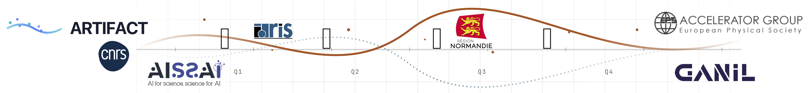
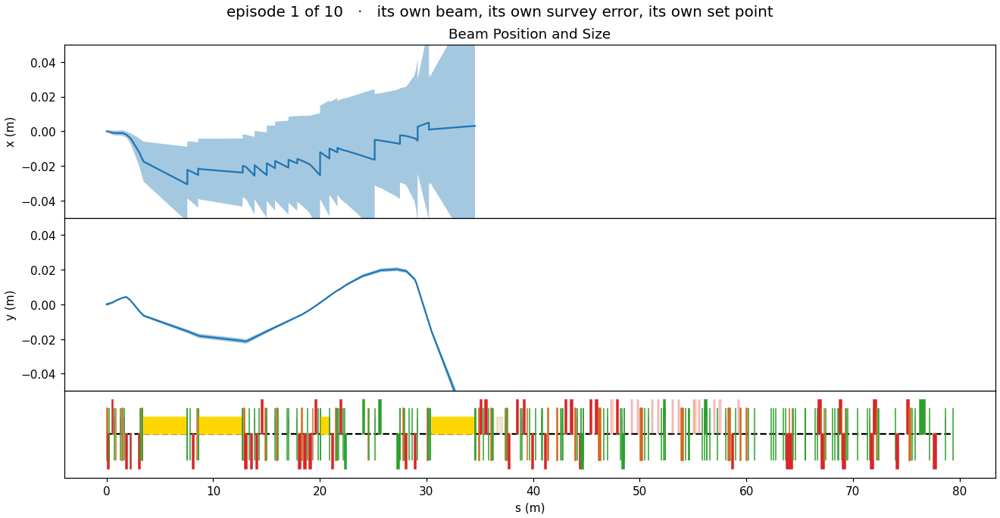
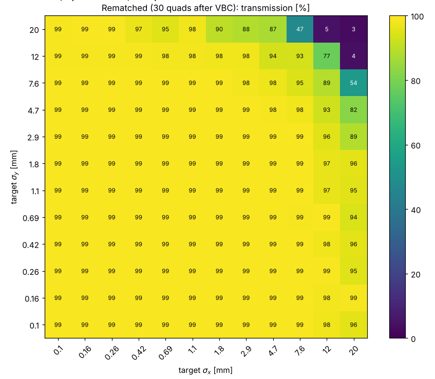
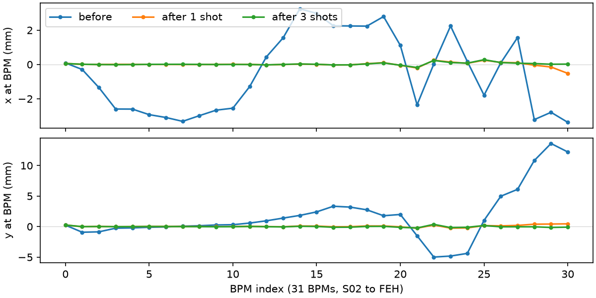
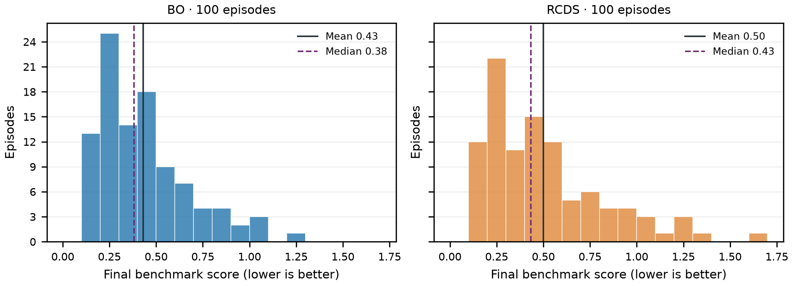
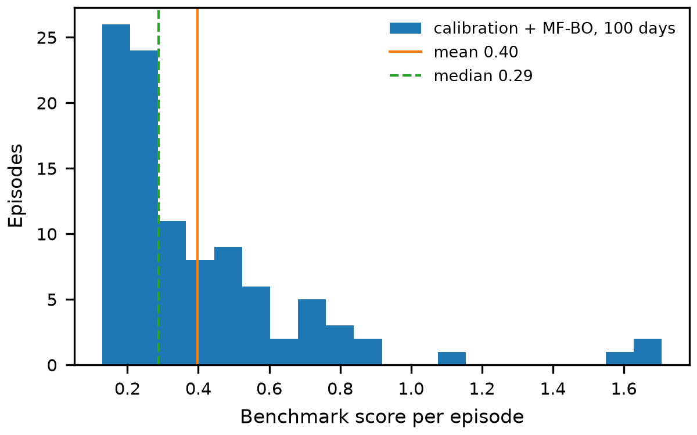
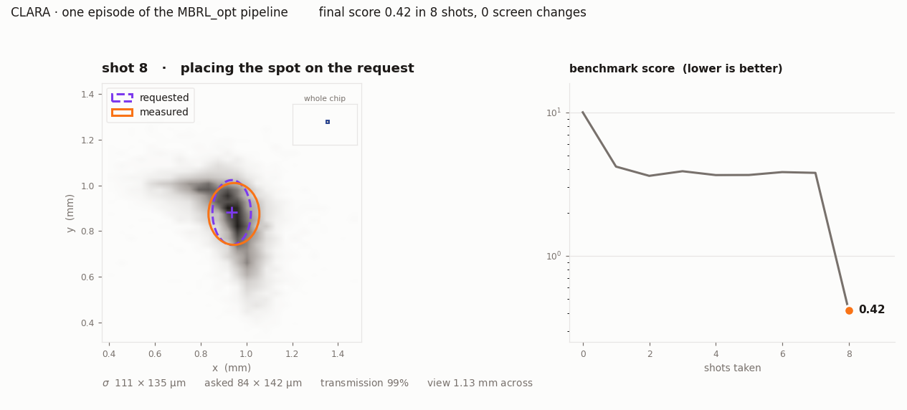

Steering CLARA end to end
Getting the beam a user asked for, in shots instead of hours
🦊
Overfit & Proud
Foxy Gradient — always finds the way down


A user asks for a spot. It costs a morning.
30–90minutes to set up, good day to bad
64.4 mS02 to the FEH screen, 282 apertures
0.1–20 mmspot sizes a user can ask for

And every day is a different machine
50 µmsurvey error on the quadrupoles and sextupoles
new beamdealt at the start of every episode
175–270 µmwhat a 200 µm spot reads, settings untouched

Ten episodes of the benchmark, same lattice, same axes:
lattice.plot_overview(beam) for each day as it was dealt.
0.8 TB of screen images, and only some of them mean anything


28cameras, calibrated µm per pixel
0.1–30%reading variation we trust
5,732capture sets through the filter
Six ways to tune a machine
Optics lookup144 matched tunes, no shots at all
SVD + response matrixinvert the model, correct in one shot
RCDSconjugate-direction search on the machine
Bayesian optimisationa GP over the knobs that matter
Multi-fidelity BOtwin as low fidelity, machine as high
Model-based RLfit a twin, plan against it, re-read






All of them on the same benchmark — which is what made the losers cheap.
What we ended up with
Optics lookup — 46 quadrupoles for the requested size
model only
↓
Steer — SVD of the correctors against the BPMs
0–4 shots
↓
Focus — five quadrupole modes, size only
~4 shots
↓ ↑
until it matches
Read the screen — the same measure as the real captures
every shot
↓
Place the spot — two correctors, one linear solve
1 shot
Everything the model can do, the model does. The machine is only asked what the model cannot answer.
One episode, eight shots

The numbers
| Method | Score | Shots | Screen moves |
|---|---|---|---|
| Calibration + MF-BO | 0.40 | 8.7 | 0 |
| SVD subspace, BO | 0.43 | 5.6 | 0 |
| SVD subspace, RCDS | 0.50 | 6.2 | 0 |
| Model-based RL | 0.77 | 6.5 | 0 |
| Optics + placement (two linear solves) | 1.00 | 2.0 | 0 |
| Do nothing | 9.65 | 0 | 0 |
A morning’s work, in six shots.
100 episodes each, lower score is better. Different draws of days, so read the column, not the decimal place.